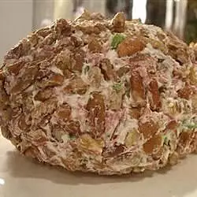

Beef ball

Description
Break out the beef ball and get the party rolling! Dried chipped beef and cheese are rolled into a tantalizing treat that's great with buttery, round crackers, vegetables and tortilla chips.
Ingredients
- 3 (8 ounce) jars dried chipped beef
- 2 tablespoons butter
- 2 (8 ounce) packages cream cheese, softened
- 1 tablespoon prepared horseradish
- ¼ cup chopped green bell pepper
- ¼ cup chopped red bell pepper
- ¼ teaspoon ground black pepper
- ¼ cup shredded Cheddar cheese
Steps
- In a medium saucepan over medium heat, cook and stir the dried chipped beef in butter until evenly browned.
- In a medium bowl, whip the cream cheese, horseradish, green bell pepper, red bell pepper and pepper until well blended. Mix in 2/3 of the beef. Roll into a ball.
- Roll the ball in the remaining beef and the Cheddar cheese. Wrap in plastic and chill in the refrigerator at least 1 hour before serving.